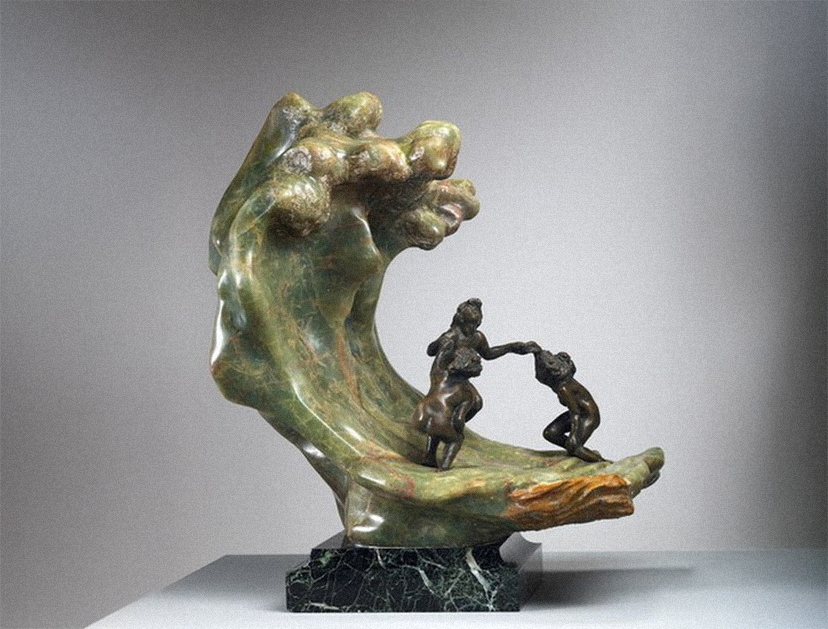

ANO 23 • • Nº 43

Porto Alegre | RS

Difícil falar em futuro quando vivemos em um mundo no qual...
A nova diretoria da Sociedade Psicanalítica de Porto Alegre (SPPA) para o biênio 2024/2025...
A pauta inicial da presente edição do Jornal foi “crueldade e reparação”.
A enchente no Rio Grande do Sul tornou visível uma realidade que estava sendo negada e encoberta...
Esta breve contribuição ao tema da crueldade acontece em um momento de intensa destruição.
A Diretoria Científica inaugurou o ano científico de 2024 recebendo...
A partir da proposta de Thomas Ogden para a psicanálise, podemos pensar o significado...
O primeiro semestre de 2024 foi marcado por uma série de eventos...
A Sociedade Psicanalítica de Porto Alegre (SPPA) está ampliando suas atividades...
A Diretoria atual da Psicanálise na Cultura mantém os laços firmados pelas gestões passadas...